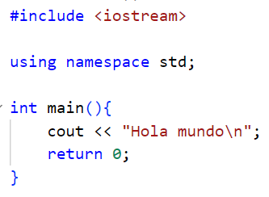

Sesión 1 - C++
IDE y estructura básica
Contenido
- 1.1 IDE
- 1.2 Estructura básica
- 1.3 Ejemplo
1.1 IDE
- El IDE a utilizar en el curso será Code::Blocks
-
Puede ser descargado en distintas versiones:
-
binaries para su instalación
- setup para descargar instalador
- nosetup para descargar carpeta portable
- source para descargar el código fuente
-
Un IDE es un entorno de desarrollo que permite tener en el mismo programa:
- Un editor de texto para escribir el código fuente
- Acceso al compilador para convertir el código fuente a código objeto
- Acceso al enlazador para ejecutar el código objeto
1.2 Estructura básica
-
Un programa en C++ tiene las siguientes secciones:
- Inclusión de bibliotecas
- Especificar espacio de nombres
- Declaración de función principal
-
Algunas consideraciones:
- Un programa en C++ tiene que guardarse con la extensión de archivo .cpp
- Por ejemplo, hola.cpp
-
